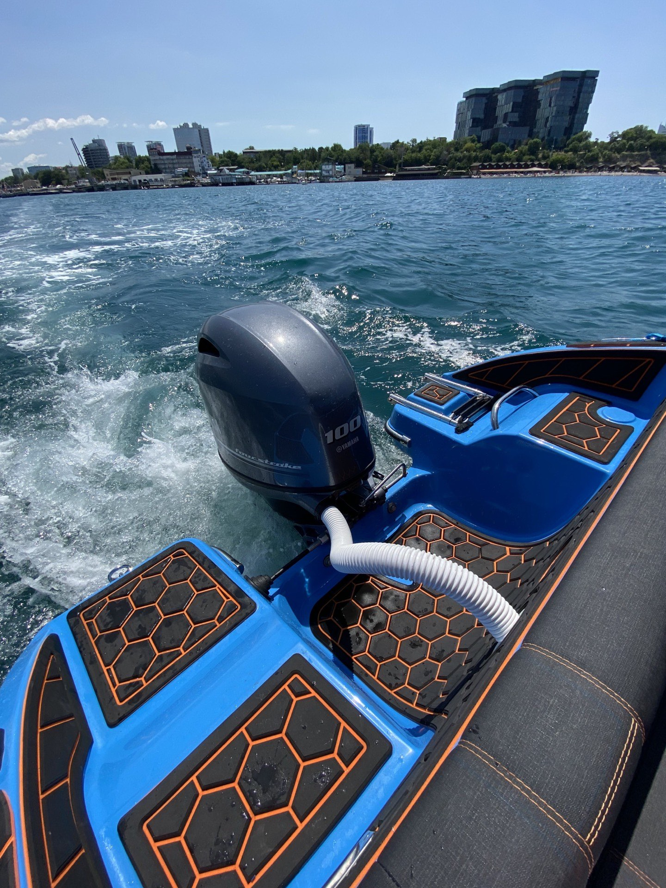
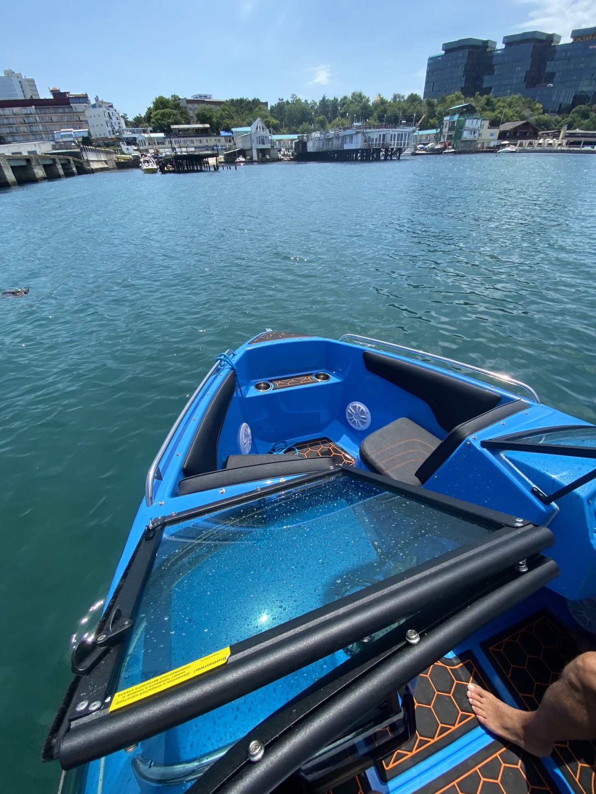

АртурSlider 175
Заказывали катер в этой фирме. Выполнили всё в срок, над катером работали профессионалы своего дела. Испробовали на воде, всё шикарно, катер безупречный , наслаждаемся морскими прогулками всей семьёй! Рекомендую!
*орфография и пунктуация автора сохранены